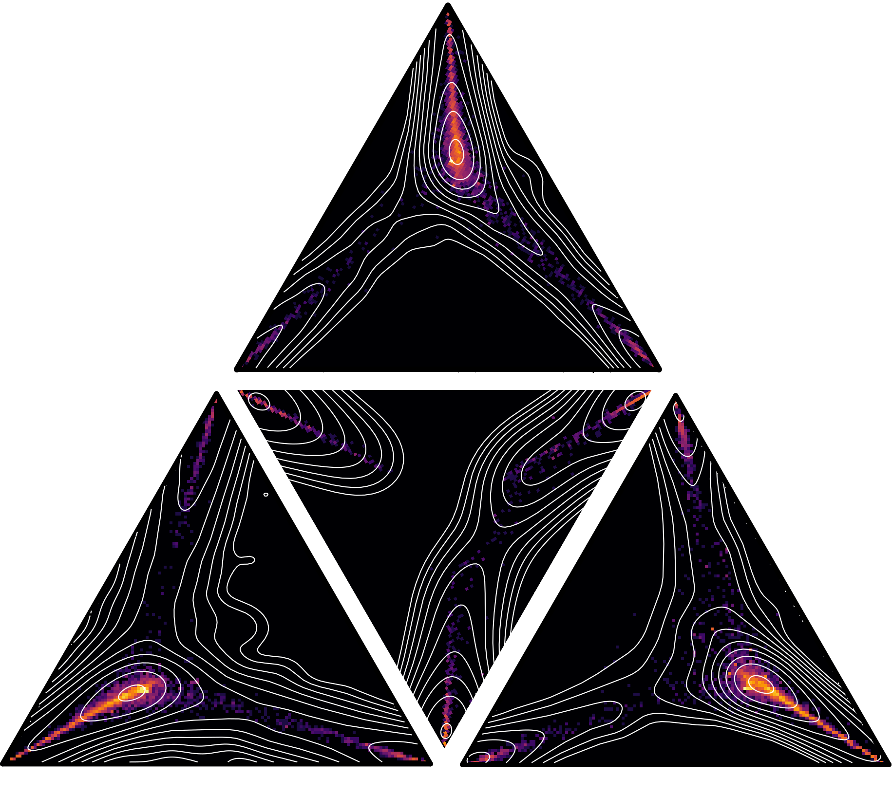
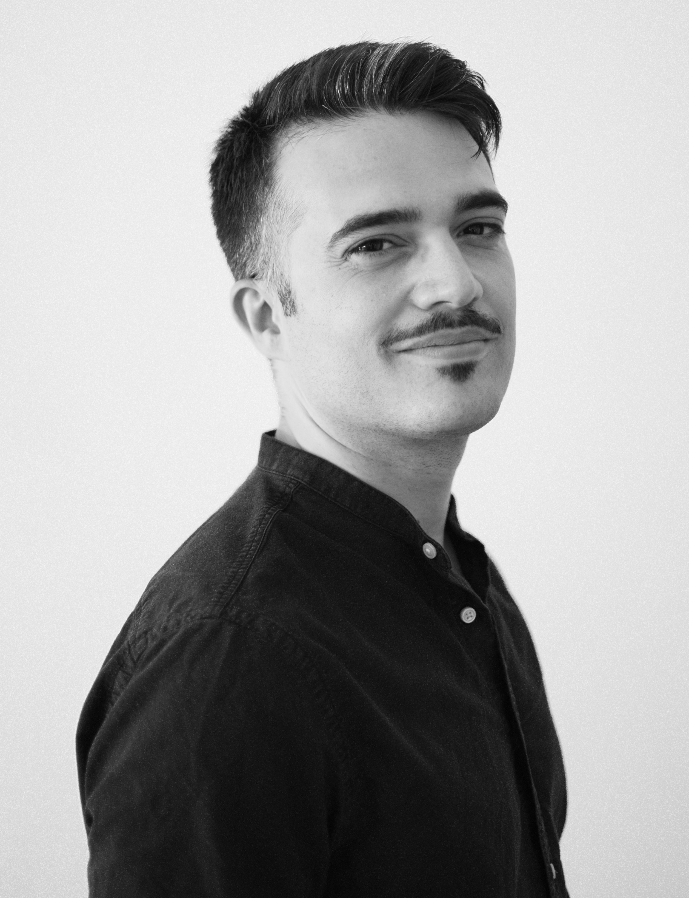

Samuel Martin-Gutierrez
Assistant Professor | Complex Systems researcher

Welcome!

Hi, I'm Samuel Martín Gutiérrez, Assistant Professor at Universidad Politécnica de Madrid. I study collective human behavior using quantitative approaches, combining large-scale data analysis with mathematical modeling to explain and predict real-world behavioral patterns. I do both basic and applied research, with a focus on social polarization and inequality. Although I am a physicist by training, my research is highly interdisciplinary, and I collaborate with sociologists, cognitive scientists, and political scientists.
My current research lines are:
- Social polarization in multipolar systems.
- Simple but realistic models of online and offline social networks, including multidimensional identities and complex interaction mechanism.
- Fair ranking systems.
- Behavioral phenotyping of Large Language Models (LLMs) for social simulation.
- Understanding the emergence of inequality through social experiments.
I earned my PhD in Complex Systems from Universidad Politécnica de Madrid in 2021, funded by a competitive national FPU fellowship. From 2021 to 2025, I was postdoctoral researcher at the Complexity Science Hub in Vienna, where I was the first postdoc of the Network Inequality Group and helped establish the group. In 2023, I was also a lecturer at Technische Universität Wien, where I co-designed the Computational Social Science course for the Master’s in Data Science. I briefly joined Technische Universität Graz as a postdoc before taking up my current position at Universidad Politécnica de Madrid. I now combine my research with teaching Physics at the School of Architecture (ETSAM).